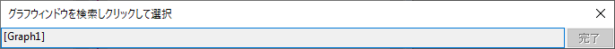

ワークブックウィンドウは最小1シート、最大で1024シートまで作成することができます。
シートの前後移動ナビゲーションボタンに加えて、ワークブックにはシート追加ボタンとオーガナイザを表示/非表示ボタンがあります。
ワークシートを非表示にするには、
非表示になると、ワークシートはワークブックオーガナイザとオブジェクトマネージャでグレー表示されます。どちらもエクスポートには表示されません。
非表示のワークシートを表示する
Note:
|
シートタブを右クリックして、挿入または削除または追加メニューを選択し、現シートの前に新しいシートを挿入したり、現シートを削除したり、新しいシートを最後のシートとして追加できます。
シートタブを右クリックしてグラフをシートとして追加またはシートとして行列を追加メニューを選択すると取得ダイアログが開き、シートとして追加したいウィンドウを選択して、グラフまたは行列ウィンドウを新しいシートとして現在のブックウィンドウに追加できます。 
シートタブを右クリックしてシートにメモを追加メニューを選択してメモウィンドウを新しいシートとして現在のブックに追加できます。
Origin 2018bから、全ての情報を含む現在のシート(ヘッダ行や構造も併せて)をクリップボードにコピーし、タブ上で右クリックしてシートをコピーを選択し、新しいシートとして貼り付けを選べば、新規のワークシートとして追加できます。
シートをコピーを選択したら、以下の操作が可能です。
シートタブで右クリックし、データなしで複製または複製を選択すると、現在のワークシートをデータなし/データ付きで複製できます。
データなしで複製を選択すると、同じ構造とヘッダ行のデータがないワークシートが作成され、現在のワークブックの最終シートとして追加されます。
Origin 2020から、シートを複製するためにデータなしで複製を選択した場合、元データのみが削除され、セル参照やセルの式などセルにリンクした内容は、後で使用するために保持されます。以前のようにセルにリンクした内容も削除するように戻すには、システム変数@DkLを使用します。
コンテキストメニュー項目の複製を選択すると、新しいワークシートが作成され、最後のシートとして現在のウィンドウに追加されます。
さらに、ワークシートに追加できるプレーンテキストのノート (ここで説明) に加えて、Originのプロジェクトにはメモを追加できる場所が他にもいくつかあります。そのうちの3つである、フォルダノート、セルノート、独立したノートウィンドウでは、テキストや画像といった混合オブジェクトおよびOriginリッチテキストなどの複雑な書式設定が可能です。 |
シートタブで右クリックして、名前とコメントを選択すると、名前とコメントダイアログが開き、現在のワークシートの名前とコメントを管理できます。
現在のワークシートの選択を解除したい場合、ワークシートの左上のセルをクリックします。もしくはワークシート列の右側の灰色の部分をクリックします。”黒い矢印”のカーソルはワークシート全体を選択する際に使われることに注意してください。 |
シートタブを右クリックして、作図ダイアログから除外を選択すると、作図のセットアップやレイヤ内容等の作図ダイアログから現在のシートを除外します。
LabTalkコマンドwks.epd = 1; を実行して、現在アクティブなシートでこの操作を実行することもできます。
さらに、以下のようにして、この操作を複数のシートに対して一度に実行することもできます。
一度除外としてタグ付けされたシートの名前は、システム変数@TCEで設定された色で表示されます。
シートタブを右クリックして、Excelエクスポートから除外するメニューを選択すると、ブック全体をExcelファイルとしてエクスポートする際に現在のシートを除外できます。
シートタブで右クリックして移動...を選択すると、現在のワークブック内のワークシートの管理に使用されるワークシートの操作ダイアログが開きます。このダイアログの詳細については、こちらのページを参照してください。
また、ワークシートの操作ダイアログに加え、Originではワークシートタブ上にマウスカーソルを載せ、マウスホイールを使用してタブをスクロールできます。ワークシート数が多い場合にホイールによるナビゲートが簡単です。 |
Ctrl キーを押してマウスの上下スクロールでワークブック内の現在のワークシートを拡大、縮小できます。また、ズームツールバー を使用して、ワークシートの列と行を拡大/縮小する割合を設定できます。
を使用して、ワークシートの列と行を拡大/縮小する割合を設定できます。
ワークシートのパンは、ズームパンイングツールボタン をクリックすると有効になり、マウスの左ボタンをクリックした状態で水平または垂直方向にドラッグして操作します。
をクリックすると有効になり、マウスの左ボタンをクリックした状態で水平または垂直方向にドラッグして操作します。
現在のワークシートにフローティンググラフがある状態で、このグラフがワークシートワークスペースを超えて完全に表示できない場合、表示：グラフの配置メニューを選択して、グラフを元のように表示できます。